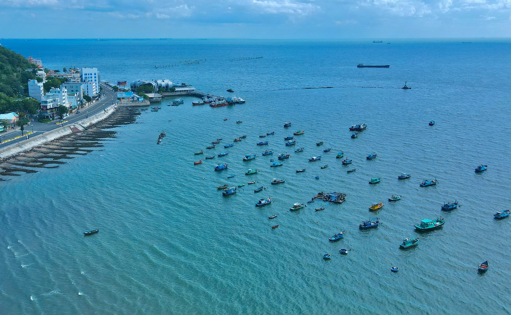
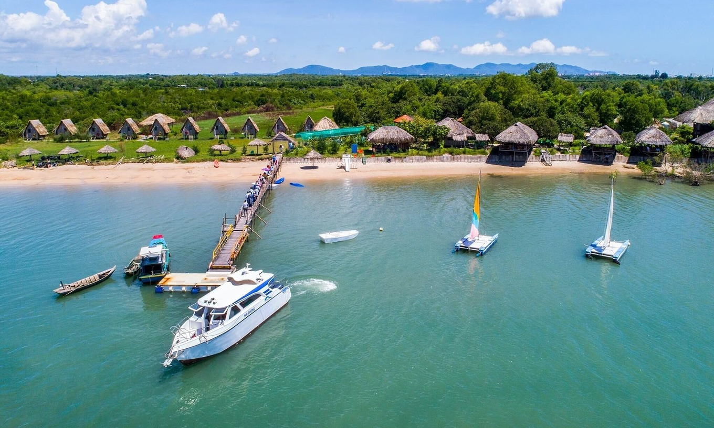
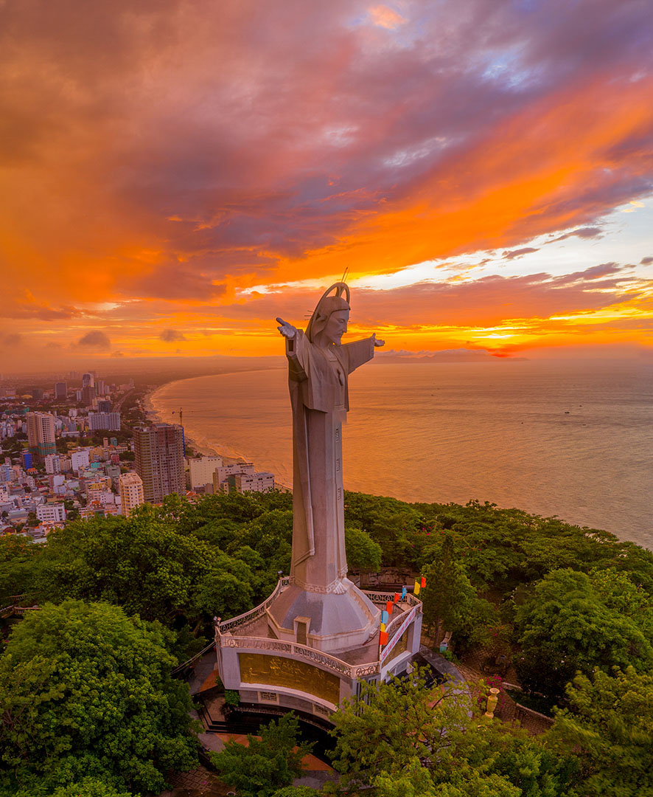
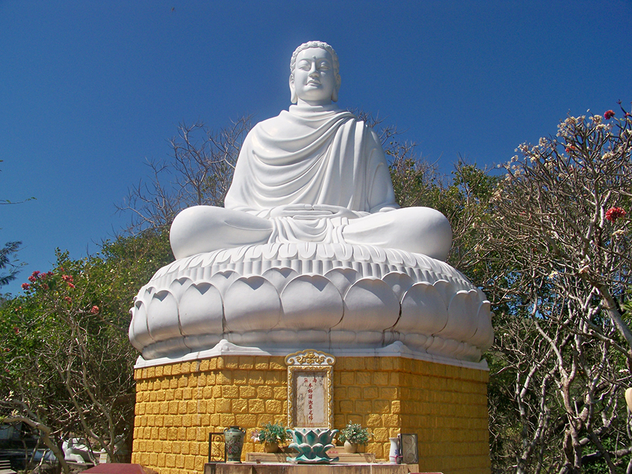

Vũng Tàu mùa nào đẹp
Vũng Tàu nằm trong vùng khí hậu nhiệt đới gió mùa với hai mùa mưa, nắng rõ rệt. Mùa mưa trong khoảng tháng 5-10 còn mùa nắng từ tháng 11 đến tháng 4 năm sau. Nhiệt độ trung bình ở ngưỡng 27 độ C nên mát mẻ quanh năm.
Trước và sau Tết là thời điểm thích hợp để du khách vừa tắm biển nghỉ dưỡng, vừa ngắm rừng hoa anh đào nở rộ ở đèo Nước Ngọt, thị trấn Long Hải. Tuy nhiên bạn cần xem trước dự báo thời tiết để tránh gặp mưa bão.,
Các ngày cuối tuần hay dịp lễ, Tết, khách du lịch đổ về đông khiến giá cả dịch vụ tăng cao, các nhà nghỉ, khách sạn chật kín phòng. Để có kỳ nghỉ đáng nhớ, bạn nên tránh các khoảng thời gian này hoặc hạn chế ở trong trung tâm thành phố.
Di chuyển
Vũng Tàu nằm trong vùng khí hậu nhiệt đới gió mùa với hai mùa mưa, nắng rõ rệt. Mùa mưa trong khoảng tháng 5-10 còn mùa nắng từ tháng 11 đến tháng 4 năm sau. Nhiệt độ trung bình ở ngưỡng 27 độ C nên mát mẻ quanh năm.
Nếu muốn trải nghiệm đi phà, du khách từ TP HCM đi khoảng 70 km đến bến đò Tắc Suất (Cần Giờ) để lên phà. Phà biển Cần Giờ - Vũng Tàu có thời gian di chuyển khoảng 30 phút. Tuy nhiên, hành khách lưu ý thời gian thực tế có thể kéo dài hơn, tùy thuộc vào tình hình thời tiết và mực nước biển. Giá vé mỗi lượt khách là 70.000 đồng. Phí chở xe máy và xe đạp 50.000 đồng mỗi xe. Ôtô từ 4 chỗ đến 26 chỗ trở lên có giá từ 350.000 đến 800.000 đồng mỗi chiếc.

Trước và sau Tết là thời điểm thích hợp để du khách vừa tắm biển nghỉ dưỡng, vừa ngắm rừng hoa anh đào nở rộ ở đèo Nước Ngọt, thị trấn Long Hải. Tuy nhiên bạn cần xem trước dự báo thời tiết để tránh gặp mưa bão.,
Nếu đi tàu cao tốc Pacific Express, bạn mất khoảng 1 tiếng 30 phút. Giá vé 200.000 đồng một người lớn. Trẻ em từ 6 đến 11 tuổi trả 100.000 đồng, dưới 6 tuổi miễn phí. Giá vé cho người trên 62 tuổi là 140.000 đồng một lượt. Tàu sẽ xuất bến từ cảng Nhà Rồng.
Từ Hà Nội, du khách phải bay hoặc đi tàu hoả tới TP HCM sau đó lựa chọn các phương tiện nói trên để tới Vũng Tàu.
Nếu muốn trải nghiệm đi phà, du khách từ TP HCM đi khoảng 70 km đến bến đò Tắc Suất (Cần Giờ) để lên phà. Phà biển Cần Giờ - Vũng Tàu có thời gian di chuyển khoảng 30 phút. Tuy nhiên, hành khách lưu ý thời gian thực tế có thể kéo dài hơn, tùy thuộc vào tình hình thời tiết và mực nước biển. Giá vé mỗi lượt khách là 70.000 đồng. Phí chở xe máy và xe đạp 50.000 đồng mỗi xe. Ôtô từ 4 chỗ đến 26 chỗ trở lên có giá từ 350.000 đến 800.000 đồng mỗi chiếc.
Địa điểm ăn chơi
Biển
Vũng Tàu nằm trong vùng khí hậu nhiệt đới gió mùa với hai mùa mưa, nắng rõ rệt. Mùa mưa trong khoảng tháng 5-10 còn mùa nắng từ tháng 11 đến tháng 4 năm sau. Nhiệt độ trung bình ở ngưỡng 27 độ C nên mát mẻ quanh năm.
Tiếp đến là bãi Trước, còn được gọi là bãi Tầm Dương do nằm ở phía Tây, có thể ngắm mặt trời lặn trên biển.

Các ngày cuối tuần hay dịp lễ, Tết, khách du lịch đổ về đông khiến giá cả dịch vụ tăng cao, các nhà nghỉ, khách sạn chật kín phòng. Để có kỳ nghỉ đáng nhớ, bạn nên tránh các khoảng thời gian này hoặc hạn chế ở trong trung tâm thành phố.
Danh thắng
Núi nhỏ và núi lớn
Núi Nhỏ và núi Lớn là hai ngọn núi đẹp của thành phố biển. Dưới chân núi Nhỏ là con đường ven biển Hạ Long được công nhận là con đường đẹp nhất Việt Nam với nhiều khách sạn, nhà hàng, quán cà phê. Trên núi có ngọn Hải đăng Vũng Tàu và Tượng Chúa Kitô Vua nổi tiếng. Còn núi lớn có đường Trần Phú bao quanh, với những điểm tham quan là Bạch Dinh, Thích Ca Phật Đài, khu du lịch Hồ Mây.

Đảo Gò Găng là một hòn đảo còn hoang sơ thuộc TP Vũng Tàu. Đến đảo, du khách được tận hưởng không khí trong lành của biển cả, thưởng thức nhiều loại hải sản độc đáo nuôi ở đây. Hàu nướng là một trong những món được ưa thích. Ngoài ra, thực đơn còn có các món như cúm, mực ống, bạch tuộc, cá sòng...
Mũi Nghinh Phong
Nghinh Phong có nghĩa là "đón gió", còn gọi là mũi Vũng Tàu, đón gió suốt 4 mùa. Đây là mũi đất vươn dài nhất ở phía Nam của bán đảo Vũng Tàu. Từ đây du khách có thể ngắm hòn Bà, xa hơn nữa là thuyền đánh cá.
Đường ra mũi Nghinh Phong gập ghềnh và nhiều đá, bạn cần đi giày hoặc dép, tránh đi chân trần. Hạn chế mặc váy để dễ dàng di chuyển. Khu vực này gió to nên du khách có thể mang theo áo khoác mỏng để tránh ngấm lạnh.
Tượng Chúa Kito
Tọa lạc ở độ cao 170m, tượng Chúa Kito hay còn gọi là tượng Chúa dang tay nhìn ra biển trên núi Nhỏ. Được khởi dựng từ 1974, bức tượng khánh thành năm 1994, với chiều cao 32 mét, chiều dài hai cánh tay là 18,4 mét. Tượng đặt trên bệ khối chạm hình Chúa và 12 tông đồ. Bên trong là cầu thang xoắn ốc gồm 133 bậc, chạy từ bệ lên cánh tay tượng - nơi du khách ngắm nhìn toàn cảnh biển và thành phố Vũng Tàu.

Ngay phía dưới chân tượng chúa là ba cỗ pháo khổng lồ - thuộc trận địa 11 đại pháo cổ trên núi Nhỏ. Mỗi khẩu pháp đều được đặt trong một công sự đào sâu dưới mặt đất, đường kính 10,5 m. Các cỗ pháp này được liên kết với nhau bằng hệ thống giao thông hào và hầm trú ẩn ngay dưới chân tượng chúa Kito.
Thích ca Phật đài
Đây là một quần thể kiến trúc Phật giáo lớn, điểm du lịch tâm linh nổi tiếng ở thành phố biển Vũng Tàu. Thích Ca Phật Đài nằm trên sườn của Núi Lớn, nổi bật với bức tượng Thích Ca Mâu Ni tọa thiền trên lưng chừng núi. Đứng từ rất xa, du khách cũng có thể chiêm ngưỡng bức tượng.

Thích Ca Phật Đài phần nào tái hiện cuộc đời của Đức Phật Thích Ca với các hình tượng Phật đản sanh, thái tử Tất Đạt Đa xuất gia, Phật Thích Ca thành đạo, Đức Phật ngồi trên tòa sen và Đức Phật nhập Niết Bàn. Ngoài ra, chùa còn có một bảo tháp Xá Lợi cao 17 m, bên trong là hộp vàng đựng 13 viên xá lợi của nhà chân tu. Dưới chân bảo tháp là bốn đỉnh lớn, trong đó đặt đất thiêng được thỉnh về từ nơi Đức Phật ra đời.